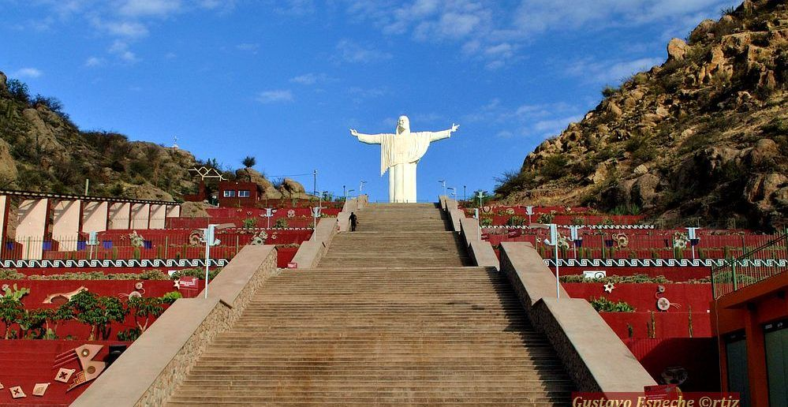
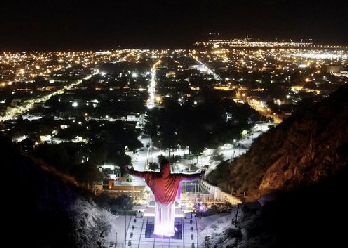

Cristo Del Portezuelo
El Cristo del Portezuelo es una escultura de Cristo, de 16 metros de altura ubicado en la ciudad de Chilecito.
La obra realizada por el artista Alejandro Carrizo, tiene como objetivo resguardar y respaldar la fe cristiana
en toda la provincia.
Tiene una base de 8 x 8 metros para sostener dicha estructura y los brazos tienen más de 6 metros de largo cada
uno.
En homenaje al Bicentenario de la Patria, 200 peldaños separan la base del Cristo que, con sus manos extendidas,
invita a los devotos a ascender para fortalecer su fe. Estos peldaños están divididos en explanadas que dan
lugar a un merecido descanso, mientras se disfruta de los jardines de cactus y el arte rupestre a lo largo del
ascenso.
Lo más recomendable es subir durante el atardecer, tanto por las imágenes como por el esfuerzo de remontar esos
escalones.

Al pie de la escalinata hay una confitería que invita a relajarse después del esfuerzo de subir y bajar, y si
bien el Cristo se ve durante todo el día desde casi todas partes de la ciudad, por las noches es un espectáculo
aparte ya que se ilumina y sus colores van cambiando a medida que avanza la noche.
La imagen se completa con una fuente magnífica de aguas danzantes, una posta de información turística,
sanitarios públicos, y una confitería.
Además, todo el predio esta ornamentado con símbolos y signos diaguitas, en representación de las culturas
originarias.

El Cristo del Portezuelo puede ser divisado a varios kilómetros de distancia dando al cotidiano paisaje de
Chilecito una esplendor inigualable.
Y si bien, se ve durante todo el día desde casi todas partes de la ciudad, por las noches es un espectáculo
aparte ya que se ilumina y sus colores van cambiando a medida que avanza la noche.
Es una identificación inconfundible, a la hora de mostrar en imágenes la ciudad, ostentando como un sueño
identificatorio, del mismo modo en que lo hace Rio de Janeiro con su famoso Cristo Redentor.
¿Como
llegar al Cristo?